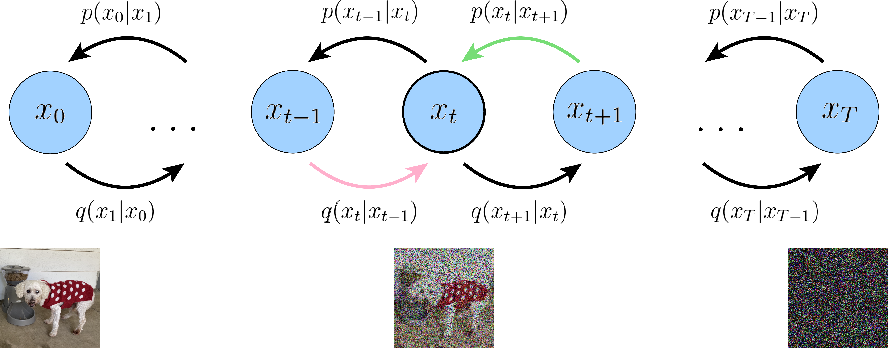

9.1. 推荐中的扩散模型基础¶
在第5章中，我们已经从架构层面介绍了扩散模型与Transformer的区别和互补关系。本节将系统回顾扩散模型的核心技术原理，并着重讨论将其应用于推荐场景时的特殊考量与设计选择。这些内容将为后续章节中具体方法的理解提供必要的技术铺垫。扩散模型的理论基础主要来自DDPM (Ho et al., 2020)，而其在推荐系统中的应用则以DiffRec (Wang et al., 2023) 为代表性工作。
9.1.1. Diffusion模型的分类¶
Diffusion模型根据其操作空间的不同，可以主要分为两大类：
数据空间扩散模型（Pixel-Space Diffusion）
这类模型直接在原始数据空间（如图像的像素空间、推荐中的交互向量空间）进行扩散和去噪过程。典型代表是DDPM（Denoising Diffusion Probabilistic Models） (Ho et al., 2020) 。虽然这类模型在理论上更加直接，但由于需要在高维原始空间进行大量的迭代操作，计算成本较高，尤其在处理高分辨率数据或长序列时效率较低。
潜在空间扩散模型（Latent Diffusion Models, LDM）
为了解决数据空间扩散的效率问题，潜在空间扩散模型首先使用编码器（通常是VAE或自编码器）将原始数据压缩到低维的潜在表示空间，然后在这个压缩空间中进行扩散和去噪，最后通过解码器还原到原始空间。Stable Diffusion就是这一类模型的代表 (Rombach et al., 2022)。
潜在空间扩散的具体流程如下。
编码阶段：使用预训练的编码器 \(\mathcal{E}\) 将原始数据 \(\boldsymbol{x}\) 映射到低维潜在表示 \(\boldsymbol{z} = \mathcal{E}(\boldsymbol{x})\)
扩散阶段：在潜在空间 \(\boldsymbol{z}\) 上执行前向扩散和反向去噪
解码阶段：使用解码器 \(\mathcal{D}\) 将去噪后的潜在表示还原为原始空间 \(\hat{\boldsymbol{x}} = \mathcal{D}(\boldsymbol{z}_0)\)
这种设计显著降低了计算复杂度。例如，若编码器将数据维度从 \(d\) 降到 \(d'\)（\(d' \ll d\)），则扩散过程的计算量可以减少 \((d/d')^2\) 倍。
推荐场景中的架构选择
在推荐系统场景中，潜在空间扩散模型的应用更为普遍。主要原因有以下三点。
效率优势：推荐系统通常需要处理大规模的用户行为序列和物品特征，直接在原始空间操作会导致不可接受的计算开销。通过在低维潜在空间操作，可以显著降低计算成本，满足工业界对实时性的要求。
语义表示：推荐任务本质上是对用户兴趣和物品语义的建模。潜在空间天然提供了更加紧凑、语义化的特征表示，更适合捕捉用户偏好和物品属性之间的复杂关系。
灵活性：潜在空间的表示可以更方便地与现有的推荐系统架构（如协同过滤、图神经网络等）进行融合，便于工程实现和系统集成。
因此，在本章后续介绍的各类方法中，扩散过程通常在物品的嵌入空间或用户的特征表示空间中进行，而非直接操作原始的稀疏交互矩阵。
9.1.2. 前向加噪与反向去噪过程¶
扩散模型的核心思想可以概括为两个互逆的马尔可夫过程：前向扩散逐步向数据添加噪声，而反向去噪则学习从噪声中恢复原始数据。
9.1.2.1. 前向扩散过程¶
给定一个数据样本 \(\boldsymbol{x}_0 \sim q(\boldsymbol{x}_0)\)，前向过程通过 \(T\) 步逐渐添加高斯噪声，构建一系列潜在变量 \(\boldsymbol{x}_{1:T}\)。每一步的转移分布定义为：
其中 \(\beta_t \in (0,1)\) 控制第 \(t\) 步添加的噪声强度。当 \(T \to \infty\) 时，\(\boldsymbol{x}_T\) 趋近于标准高斯分布。
利用重参数化技巧 (reparameterization trick) 和高斯噪声的可加性，我们可以从 \(\boldsymbol{x}_0\) 直接采样得到任意时刻 \(t\) 的加噪数据：
这等价于：
其中 \(\alpha_t = 1 - \beta_t\)，\(\bar{\alpha}_t = \prod_{i=1}^{t}\alpha_i\)。这个性质使得训练时可以高效地采样任意时间步的加噪数据，而无需逐步执行前向过程 (Ho et al., 2020)。
9.1.2.2. 反向去噪过程¶
反向过程从 \(\boldsymbol{x}_T\) 出发，通过学习到的去噪网络逐步恢复原始数据。每一步的去噪转移定义为：
其中 \(\boldsymbol{\mu}_\theta\) 和 \(\boldsymbol{\Sigma}_\theta\) 是由神经网络参数化的均值和协方差。在实际应用中，协方差通常设为固定值 \(\sigma^2(t)\boldsymbol{I}\)，重点学习均值函数。
{kind=link}

图9.1.1 前向扩散和反向去噪过程的示意图¶
图片展示了用户交互向量从 \(\boldsymbol{x}_0\) 逐步添加噪声变为 \(\boldsymbol{x}_T\) 的过程（前向扩散），以及从 \(\boldsymbol{x}_T\) 逐步恢复 \(\boldsymbol{x}_0\) 的过程（反向去噪）。图片来源：(Luo, 2022)。
9.1.3. 扩散模型的训练与采样¶
9.1.3.1. 训练目标：从ELBO到简化损失¶
扩散模型通过最大化观测数据 \(\boldsymbol{x}_0\) 的对数似然下界（ELBO）进行训练：
重建项衡量从 \(\boldsymbol{x}_1\) 恢复 \(\boldsymbol{x}_0\) 的能力，而去噪匹配项则约束学习到的反向转移 \(p_\theta(\boldsymbol{x}_{t-1}|\boldsymbol{x}_t)\) 与真实后验 \(q(\boldsymbol{x}_{t-1}|\boldsymbol{x}_t,\boldsymbol{x}_0)\) 对齐。去噪匹配项中的真实后验 \(q(\boldsymbol{x}_{t-1}|\boldsymbol{x}_t,\boldsymbol{x}_0)\) 代表了已知原始数据 \(\boldsymbol{x}_0\) 时的最优去噪方式，而推理时我们并不知道 \(\boldsymbol{x}_0\)，因此需要训练网络 \(p_\theta\) 来近似这个理想过程，使其在没有 \(\boldsymbol{x}_0\) 的情况下也能做出接近最优的去噪决策。
9.1.3.2. 两种参数化方式¶
在实际实现中，去噪网络可以采用两种不同的参数化方式。
1. 预测噪声 \(\boldsymbol{\epsilon}\)：网络 \(\boldsymbol{\epsilon}_\theta(\boldsymbol{x}_t, t)\) 学习预测添加到 \(\boldsymbol{x}_0\) 上的噪声。这是DDPM (Ho et al., 2020) 的标准做法，损失函数为：
2. 预测原始数据\(\boldsymbol{x}_0\)：网络 \(\hat{\boldsymbol{x}}_\theta(\boldsymbol{x}_t, t)\) 直接预测原始数据 \(\boldsymbol{x}_0\)。损失函数为：
这两种参数化在数学上是等价的，因为 \(\boldsymbol{x}_t = \sqrt{\bar{\alpha}_t}\boldsymbol{x}_0 + \sqrt{1-\bar{\alpha}_t}\boldsymbol{\epsilon}\)，知道其中任一个都可以推导出另一个。然而，在推荐场景中，预测 \(\boldsymbol{x}_0\) 的方式往往更为合适 (Wang et al., 2023)。这是因为推荐的核心目标是从加噪的交互向量中恢复用户的原始交互 \(\boldsymbol{x}_0\)，并用模型输出 \(\hat{\boldsymbol{x}}_0\) 作为交互预测分数进行排序推荐。直接优化 \(\boldsymbol{x}_0\) 的重建更符合这一任务目标。此外，随机采样的噪声 \(\boldsymbol{\epsilon} \sim \mathcal{N}(\boldsymbol{0}, \boldsymbol{I})\) 具有较大的方差，迫使网络估计这样不稳定的目标会增加训练难度。
9.1.3.3. 采样过程¶
训练完成后，生成新样本的过程如下。
从标准正态分布采样初始噪声：\(\boldsymbol{x}_T \sim \mathcal{N}(\boldsymbol{0}, \boldsymbol{I})\)
对于 \(t = T, T-1, \ldots, 1\)，迭代执行去噪步骤：
(9.1.8)¶\[\boldsymbol{x}_{t-1} = \frac{1}{\sqrt{1-\beta_t}}\left(\boldsymbol{x}_t - \frac{\beta_t}{\sqrt{1-\bar{\alpha}_t}}\boldsymbol{\epsilon}_\theta(\boldsymbol{x}_t, t)\right) + \sigma_t \boldsymbol{z}\]其中 \(\boldsymbol{z} \sim \mathcal{N}(\boldsymbol{0}, \boldsymbol{I})\)，\(\sigma_t\) 控制采样的随机性。
最终得到生成样本 \(\boldsymbol{x}_0\)。
9.1.3.4. 推荐场景的特殊设计¶
与图像生成不同，推荐场景中的扩散模型通常采用以下特殊设计。
噪声尺度控制：标准 DDPM 的前向过程会将数据逐步扩散至纯高斯噪声，即 \(\bar{\alpha}_T \to 0\)。这在推荐场景中并不理想，因为完全丢失用户的历史偏好信息后，模型需要从零开始重建用户兴趣，增加了生成难度。为此，推荐系统通常通过噪声尺度参数 \(s\) 来限制最大噪声强度，使得即使在 \(t=T\) 时刻，数据仍保留一定的原始信号。具体地，噪声强度可以采用如下线性形式：
其中超参数 \(s \in [0, 1]\) 控制整体噪声强度，\(\alpha_{\min} < \alpha_{\max}\) 定义噪声的上下界。
推理起点选择：在推理时，我们可以从部分加噪的状态 \(\boldsymbol{x}_{T'}\)（\(T' < T\)）开始反向去噪，而非从纯噪声开始。这样既能利用去噪过程的纠错能力处理原始交互中的噪声，又能保留足够的个性化信息。
9.1.4. 条件生成与可控性¶
在推荐场景中，我们希望生成过程能够受到用户历史行为、上下文信息等条件的控制。条件扩散模型通过在去噪过程中引入条件信息 \(\boldsymbol{c}\) 来实现这一目标。
9.1.4.1. 条件信息的注入¶
条件信息可以通过多种方式融入去噪网络，常见方式如下。
直接拼接：将条件 \(\boldsymbol{c}\) 与加噪数据 \(\boldsymbol{x}_t\) 拼接后输入网络
加性融合：将条件编码后与时间步嵌入相加，注入到网络的各层
交叉注意力：在Transformer架构中使用cross-attention机制融合条件信息
训练时的损失函数相应修改为条件形式：
9.1.4.2. 两种引导策略¶
在推理阶段控制生成方向的主要有两种策略：
1. Classifier-Guided（分类器引导）
该方法由Dhariwal和Nichol (Dhariwal and Nichol, 2021) 提出，使用一个预训练的分类器 \(p_\phi(y|\boldsymbol{x}_t)\) 来引导生成方向。修改后的噪声预测为：
其中 \(\gamma\) 控制引导强度。分类器的梯度将去噪过程推向目标类别 \(y\) 的方向。在推荐场景中，可以用序列推荐模型作为“分类器”，引导生成与用户历史一致的交互序列 (Liu et al., 2023)。
2. Classifier-Free Guidance（无分类器引导）
该方法由Ho和Salimans (Ho and Salimans, 2022) 提出，无需额外的分类器，而是在训练时同时学习条件和无条件两个模型。具体做法是以一定概率 \(p_u\) 将条件 \(\boldsymbol{c}\) 替换为空占位符 \(\Phi\)。推理时的噪声预测为：
其中 \(\gamma\) 控制条件的影响强度。较大的 \(\gamma\) 会增强个性化程度，但可能损害生成质量；较小的 \(\gamma\) 则生成更多样但个性化程度较低的结果。
9.1.4.3. 推荐中的条件设计示例¶
以序列推荐为例，条件信息通常是用户的历史交互序列。一种典型的设计是使用Transformer编码器将历史序列 \(\boldsymbol{e}_{1:n-1}\) 编码为条件向量：
然后用这个条件向量引导扩散过程生成目标物品的嵌入：
这种设计将序列建模（Transformer）与生成建模（Diffusion）有机结合，充分发挥两者的优势。DreamRec (Yang et al., 2023) 正是采用了这种架构。
本节回顾了扩散模型的核心技术，并讨论了将其应用于推荐场景时的特殊考量。在接下来的章节中，我们将看到这些技术如何被具体应用于数据与场景增强（DiffuASR (Liu et al., 2023)、Diff-MSR (Wang et al., 2024)）以及特征增强与多样性优化（AsymDiffRec (Zhu et al., 2025)、DMSG (Tomasi et al., 2025)）等任务中。